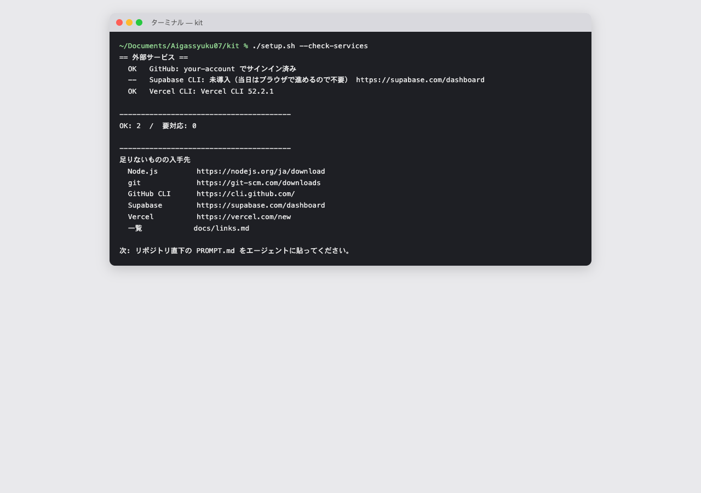

環境を整える
当日の朝にやることです。インストールは事前準備で済んでいる前提で、ここではキットを開いてガイドに最初の一言を送るところまで進めます。画面はCodex基準で説明します。
このページを終えると、エージェントがキットを読み、「次にやること」を1つ返してくれる状態になります。
このページの地図
flowchart LR A["1 足りない物を確認
setup.sh"] --> B["2 サービスを確認
--check-services"] B --> C["3 キットを開く
Codex / Claude"] C --> D["4 最初の一言
PROMPT.md"] D --> E["ガイドが
次の一手を返す"]
たとえるなら
料理教室の調理台の準備です。包丁とまな板（道具）が揃っているか確かめ、レシピ（キット）を開き、先生（ガイド）に「何から始めますか？」と聞きます。
当日の手順
-
足りないものを確認する
cd ~/Documents/Aigassyuku07/kit ./setup.sh何もインストールしません。足りないものと入手先URLを表示するだけです。
NGが出たらURLから入れて、もう一度実行します。
最後の行が「要対応: 0」なら次へ -
外部サービスの準備状況を見る
./setup.sh --check-servicesGitHubにサインイン済みかを確かめます。
NGが出たらgh auth loginを実行します。SupabaseとVercelは当日ブラウザで使うので、CLIは入っていなくて構いません。
GitHubがOKなら次へ -
キットをエージェントで開く
Codexを起動し、
Aigassyuku07/kitフォルダを作業フォルダとして開きます。ここが今日の午前の作業場所です。ここに画像: Codexでkitフォルダを開いた画面Codexでフォルダを開く Claudeを使う人: Claude Codeで同じフォルダを開きます。
CLAUDE.mdが読まれ、.claude/skills/のスキルが使えます。Codexは同じスキルを.agents/skills/から読みます。 -
最初の一言を送る
リポジトリ直下のPROMPT.mdの「最初に貼るもの」をコピーして送ります。
このフォルダで作業します。guide スキルを使って、docs/guide-steps.md を読み、 いまの状態（どのステップまで終わっているか）を判定してから、 次にやることを1つだけ指示してください。（以下、PROMPT.md のとおり）エージェントが「現在地・次の一手・使うスキル・終わりの状態」を返してくれば成功です。
実際の応答例（Codexでリハーサルした結果）
現在地: Step 0の途中です。ツール確認は完了（要対応0）ですが、GitHub未サインインのためStep 0は未完了です。Step 1以降も未着手です。 次の一手: GitHubへサインインする。 使うスキル: `guide` あなたがやること: 1. このフォルダのターミナルで `gh auth login` を実行 2. `GitHub.com` → `HTTPS` → `Login with a web browser` を選択 3. 表示されたURLをブラウザで開き、コードを入力して「Authorize GitHub CLI」を押す 4. 終わったら `./setup.sh --check-services` を実行 終わりの状態: `GitHub: ... でサインイン済み` と表示され、`NG` が1つもない。
スキルの呼び方
キットには16本のスキル（AIへの手順書）が入っています。呼び方は3通りあり、どれでも動きます。
Codex: $guideClaude: /guide文章でも: 「guideで〜して」
一覧は道具のページにあります。覚えるのは guide だけで大丈夫です。次に使うスキルは、ガイドが教えてくれます。
うまくいかないとき
| 症状 | 対処 |
|---|---|
command not found: node | brew install node のあと、ターミナルを閉じて開き直す |
ghで認証を求められる | gh auth login → GitHub.com → HTTPS → ブラウザでログイン |
kit/ の中で実行してくださいと出る | cd ~/Documents/Aigassyuku07/kit してからもう一度 |
| エージェントがスキルを知らないと言う | 開いているフォルダがkitか確認する。親のAigassyuku07を開いていると読めない |
| 会社のPCで入れられない | 隣の人と2人1組で1台を使い、自社の題材で進める。帰社後のインストール依頼は事前準備の依頼文を使う |
覚えること（3つ）
- 開くのは
kitフォルダ（親フォルダではない） - 最初の一言は PROMPT.md をそのまま貼る
- 覚えるスキルは
guideだけ